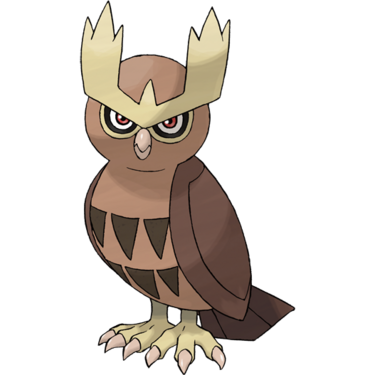
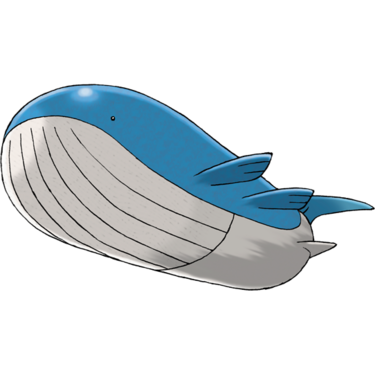
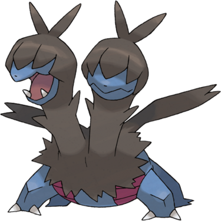
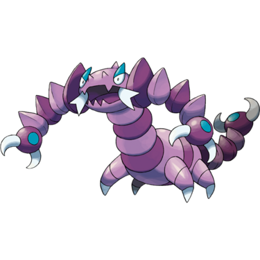
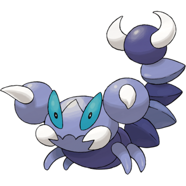

Quick Guide:
- Explore the Magnolia Fields
- Visit Redwood Village and explore
- Challenge the Redwood Gym to obtain the Time Badge and Qualify for the Pokémon League
Magnolia Fields
{kind=link}
| Points of Interest | |
|---|---|
| HiHorsepower Trainer | |
 |
Rancher Carter |
 |
Safari Zone Mission |
 |
Fisherman Jasper |
 |
Rancher Molly |
 |
Jogger Beck |
 |
Savanna Vivillon |
 |
Swimmer Darcie |
 |
Bug Catcher Brent |
| Exits | |
|---|---|
 |
Magnolia Town |
 |
Redwood Village |
Items
| Items | |
|---|---|
|
Heart Scale (hidden) |
|
| Net Ball | |
| Zinc | |
| Zygarde Cell | |
|
Max Repel (hidden) |
|
|
Elixir (hidden) |
|
| Max Potion | |
| Zygarde Cell |  |
|
Rare Candy (hidden) |
|
| TM22 Solar Beam | |
| X Sp. Def | |
Wild Pokémon
| Wild Pokémon | |
|---|---|
| Long Grass | |
|
Tranquill Normal/Flying Day and Night |
|
|
Furfrou Normal Day and Night |
 |
|
Mudsdale Ground Day and Night |
|
|
Gogoat Grass Day and Night |
|
|
Miltank Normal Day and Night |
|
|
Tauros Normal Day and Night |
|
|
Noctowl Normal/Flying Night |
 |
| Surfing | |
|
Frillish Water/Ghost |
|
|
Pelipper Water/Flying |
 |
|
Jellicent Water/Ghost |
|
| Fishing | |
|
Magikarp Water (Old Rod) |
 |
|
Gyarados Water/Flying (Good Rod) |
 |
|
Wailmer Water (Good Rod) |
 |
|
Wailord Water (Super Rod) |
 |
|
Gyarados Water/Flying (Super Rod) |
|
|
Qwilfish Water/Poison (Super Rod) |
 |
Trainers
| Trainers | |
|---|---|
| Rancher Carter | |
|
Furfrou Normal (Lv.55) |
|
|
Mudsdale Ground (Lv.56) |
|
|
Tauros Normal (Lv.57) |
|
| Fisherman Jasper | |
|
Qwilfish Water/Poison (Lv.55) |
|
|
Qwilfish Water/Poison (Lv.57) |
|
| Rancher Molly | |
|
Furfrou Normal (Lv.55) |
|
|
Gogoat Grass (Lv.56) |
|
|
Miltank Normal (Lv.57) |
|
| Jogger Beck | |
|
Unfezant Normal/Flying (Lv.57) |
 |
|
Unfezant Normal/Flying (Lv.56) |
|
| Swimmer Darcie | |
|
Jellicent Water/Ghost (Lv.57) |
|
| Bug Catcher Brent | |
|
Pineco Bug (Lv.56) |
|
|
Scyther Bug/Flying (Lv.57) |
|

The final Badge in the Pokémon League is in Redwood Village, and the only way to get there is to cross through Magnolia Fields.
The first person you see is a move trainer who will teach a Pokémon HiHorsepower for 3 Yellow Shards.
A New Mission
The road may end here, but the path doesn’t.
Go south and you’ll be led through a long path through some trees and long grass.
Rancher Carter will probably run into you somewhere along here.
You’ll eventually come to a fork in the forest path.
For now, go north and follow the trees along until you see a Trainer Tips sign and another choice to make.
Take the west path through the trees and you’ll see a man with orange hair who has a mission for you.
In order to complete the mission, you’ll need to catch 25 Pokémon in one single session of the Safari Zone – considering you only have 30 Balls total, it’s a pretty tall order, even on Easy difficulty.
If you manage it though, you’ll get 30 Beast Balls – useful for catching Ultra Beasts in the endgame.
Finding a Vivillon
Go all the way back to the first fork in the woods, near Rancher Carter, and head east through the long grass to the shoreline and Fisherman Jasper.
Surf east in this lower part of the water channel and you’ll see a barren patch of land.
Apparently the Guardian Pokémon of this route is gone, and the area is slowly dying.
Rancher Molly takes her anger about this out on you, but once you’ve defeated her you can move to the east side and surf across to the other shore.
Jogger Beck is waiting for you on the other side.
After that, head southeast and you’ll see a small passage to a southern clearing.
One of the 19 Vivillon the collector in Magnolia Town told you about here – you can defeat it or try and catch it, but the difficulty in catching is turned way up for these so it may take a few tries.
That’s it for this section of the Fields – so you can go all the way back to the Trainer Tips sign on the west bank and head north to continue.
Continuing Forward
Redwood Village is on the eastern back but you’ll need to take the northern water passage to get there. Cut a small tree down and walk northeast and you’ll eventually see the shore.

Surf east through the rocks. You’ll probably encounter Swimmer Darcie on the way.
After you pass Darcie, it’s a long surf until you get to the northeast shore.
Bug Catcher Brent is here to greet you with a battle – once done, continue east and you’ll make it to the Redwood Village entrance.
Go east into the trees and you’ll find yourself in a small, dark, wooded area – welcome to Redwood.
Redwood Village
{kind=link}
| Points of Interest | |
|---|---|
| Pokémon Center | |
|
Poke Mart |
|
Babysitting House |
|
Breeder House |
|
Cleanse Tag Medium |
|
Magikarp Mission House |
|
Redwood Gym |
| Exits and Passages | |
|---|---|
|
Magnolia Fields |
 |
Redwood Forest |
Items
| Items | |
|---|---|
| Tanga Berry | |
| Zygarde Cell | |
| TM102 Dazzle Gleam | |
Wild Pokémon
| Wild Pokémon | |
|---|---|
| Headbutt | |
|
Aipom Normal |
|
|
Pineco Bug |
|
|
Scyther Bug/Flying |
|
|
Pinsir Bug |
 |
|
Heracross Bug/Fighting |
 |
Redwood Village is pretty small, but it does have the final Gym in the League. So it’s worth looking around a little while you’re here.
If you have a Pokémon that knows Headbutt, you can use it on the trees here to encounter a variety of wild Pokémon.
Tip: There’s no Headbutt TM in the game, but various Pokémon you may have encountered such as Litleo and Cubone learn the move through leveling.
When you head into the Pokémon Center, go up to the woman on the west wall and she’ll want to see a Pokémon holding Charcoal.
If you go and pick Tepig up from the house on Route 5 giving away Unova starters, it will be holding a Charcoal. Show that to her and she’ll give you a Luck Incense.
If you’re doing the trading mission, the final trade in the main game of Pokémon Unbound is here on the east side of the Pokémon Center.
Balogna wants a Zweilous in exchange for a Lampent.
| Pokémon Trade | |
|---|---|
| Balogna offers: | |
|
Lampent Ghost/Fire |
|
| You offer: | |
|
Zweilous Dark/Dragon found in Crystal Peak |
 |
When you’re finished healing and shopping, head east along the main road.
Babysitting for Quick Cash
Go inside the house in the northeast corner of the village, where you’ll get an unusual request – but only during 7am-7pm.
Apparently your services as a babysitter are required, just for a minute or two.
Say yes, and you’ll have to walk around Redwood Village for a while with a baby in tow!
Take the baby around for a spin for a little while, maybe just a couple minutes. Then you can return to the house.
When you return the baby, you’ll get a very respectable P10,000.
Not bad!

Next, head to the house south of the Pokémon Center, up against the west edge of the village.
The Breeders House
There’s a couple of Breeders inside – the woman will speed up all Eggs in your party for a fee that increases every time you use it.
If there are any Eggs you don’t want, you can sell them off to the male Breeder for P2000 each.
Other Items To Get
Speak to the old woman wandering around on the south end of town and you’ll get a Cleanse Tag.
The house in the southeast corner has a member of the Hip Waders fisherman’s club in it, and he offers a mission to fellow members.
You just have to catch all the Magikarp you can, which is easy with an Old Rod.
If you manage to fill up a Box with them, you’ll get a Shiny Magikarp for your trouble.
| Reward Pokémon | |
|---|---|
|
Magikarp (Shiny) Water |
|
With all that done in the village, it’s time to go to the last Gym in the Pokémon League and earn that Badge.
Redwood Gym – Time Badge
The Redwood Gym is a Bug-type Gym, which should be a pushover for Fire, Flying- and Rock-types, right? Well, yes.
But that’s not the only mechanic at work in this Gym.
The gimmick here is that to earn the Time Badge, you’ll have to fight Pokémon that, instead of fainting, merely regress to their pre-evolution form, until they run out of those forms.
So most Pokémon here have two or three phases.
This also applies to your Pokémon too – and they’ll go back to normal at the end of each battle – but be aware that Pokémon can forget moves and get weaker as they devolve.
Gym Trainers
| Gym Trainers | |
|---|---|
| Ace Trainer Daisy | |
|
Accelgor Bug (Lv.58) devolves to Shelmet Bug (Lv.58) |
|
|
Scolipede Bug/Poison (Lv.58) devolves to Whirlipede Bug/Poison (Lv.58) devolves to Venipede Bug/Poison (Lv.58) |
  |
| Ninja Bug Fuller | |
|
Ariados Bug/Poison (Lv.57) devolves to Spinarak Bug/Poison (Lv.57) |
 
|
| Expert Tizzy | |
|
Yanmega Bug/Flying (Lv.58) devolves to Yanma Bug/Flying (Lv.58) |
 |
|
Vikavolt Bug/Electric (Lv.58) devolves to Charjabug Bug/Electric (Lv.58) devolves to Grubbin Bug (Lv.58) |
  
|
| Bug Catcher Curtis | |
|
Beedrill Bug/Poison (Lv.58) devolves to Kakuna Bug/Poison (Lv.58) devolves to Weedle Bug/Poison (Lv.58) |
 
|
The Gym Puzzle
There are four trainers you need to beat before facing Benjamin, the Gym Leader. And each trainer is in their own room.
There’s also a button in a rock in each room.
After beating all four trainers in their rooms, you’ll have to hit the buttons in a particular order – only then will the final room open.
This order is hinted at by the trainers, but it can actually be figured out two ways:
- The themes of the rooms each trainer is in – each represent a major story dungeon. You have to go backwards through the story to get the order, so that would be Crystal Peak – Thundercap Mountain – Cinder Volcano – Icicle Cave.
- Or, like Benjamin Button – you simply push them in reverse order of the trainers’ ages: elderly Expert Tizzy – adult Ace Trainer Daisy – teenager Bug Catcher Curtis – child Ninja Boy Fuller.
Here is the correct button order for the gym puzzle.
| Button Order | |
|---|---|
|
Expert Tizzy’s Room (Crystal Peak) |
|
|
Ace Trainer Daisy’s Room (Thundercap Mountain) |
|
|
Bug Catcher Curtis’ Room (Cinder Volcano) |
|
|
Ninja Boy Fuller’s Room (Icicle Cave) |
|
Once you’ve pushed the buttons in the correct order, you’re ready to face the final Gym Leader in Borrius.
Redwood Gym Leader – Benjamin

Benjamin puts up a tough fight, even with Bug Pokémon – all of his bugs are interesting double types, and Drapion isn’t even technically Bug-type, though it evolves from one.
| Gym Leader Benjamin | |
|---|---|
|
Araquanid Water/Bug (Lv.59) devolves to Dewpider Water/Bug (Lv.59) |
 
|
|
Scizor (Mega) Bug/Steel (Lv.60) devolves to Scyther Bug/Flying (Lv.60) |
|
|
Drapion Poison/Dark (Lv.61) devolves to Skorupi Poison/Bug (Lv.61) |
  |
|
Butterfree Bug/Flying (Lv.60) devolves to Metapod Bug (Lv.60) devolves to Caterpie Bug (Lv.60) |
 
|
You’ll get TM49 Leech Fang for beating Benjamin, and… he ‘devolved’ too, into a little kid.
Nothing less for the bestower of the Time Badge.
After You Win
Now there is nothing stopping you from reaching the Pokémon League – except for Victory Road, of course.
The trail to Victory Road starts east of Gurun Town, so fly there to get started.